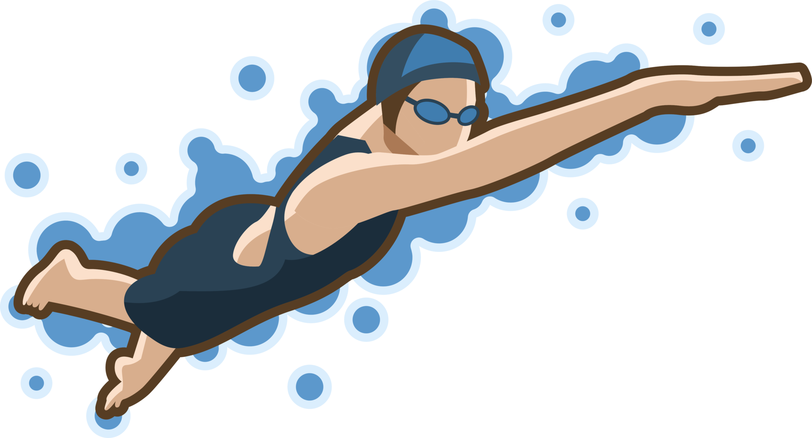
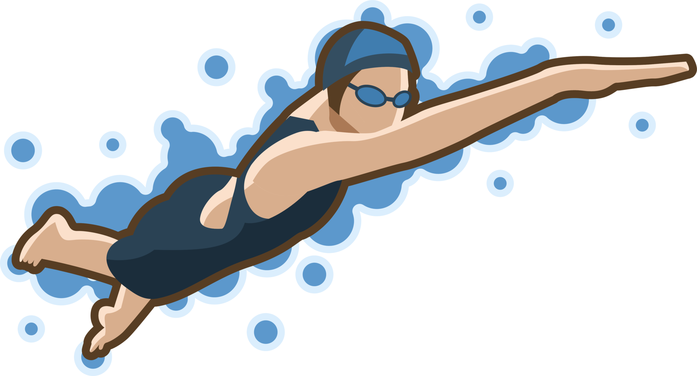

My favorite movie of all time is Crazy Rich Asians, it is about a girl called Rachel Chu, who is a plain professor, and a boy named Nick Young, who was born in the richest Singapore Family. This movie talks about Rachel's journey going to Singapore to live with Nick's family for some time. They are girlfriend and boyfriend and Nick's mom doesn't like Rachel, because she thinks Nick is out of her league. But at the end, the mother agrees for Nick to propose to Rachel because she realizes what a smart and driven girl Rachel actually is and how in love Nick is with Rachel.
My favorite type of music is K-pop. I also listen to modern pop as well. My favorite pop song is Tomboy by Destiny Rogers. My favorite K-pop song is Get a Guitar by Riize.
Tomboy MV Get a Guitar MVI got into K-pop because of a few of my friends in 4th grade who first started liking K-pop. Then my interest in the music genre became stronger as the years went on. I've influenced a few of my friends into K-pop as well during these few years (Which I am really proud of).
 
